Tori-no-ichi: the rake market that opens at midnight
For two days in November, the lanes behind Asakusa fill with bamboo rakes the size of a small child, covered in gold coins, treasure ships and laughing masks. This is tori-no-ichi (酉の市), the market where Tokyo's shopkeepers buy next year's luck. The dates are the hard part: they follow the rooster days of the old calendar, so they move every year and there are either two or three of them. In 2026 there are two — Saturday 7 November and Thursday 19 November — and each one runs a full twenty-four hours, starting with a drum at midnight.

The 2026 dates, and why they move
Tori-no-ichi is held on the rooster days of November. The old Japanese calendar labelled each day with one of twelve zodiac animals in a repeating cycle, so rooster days land twelve days apart — which means November contains either two or three of them, on different dates every year. There is no fixed date to memorise, and a guide that tells you "tori-no-ichi is in mid-November" is guessing.
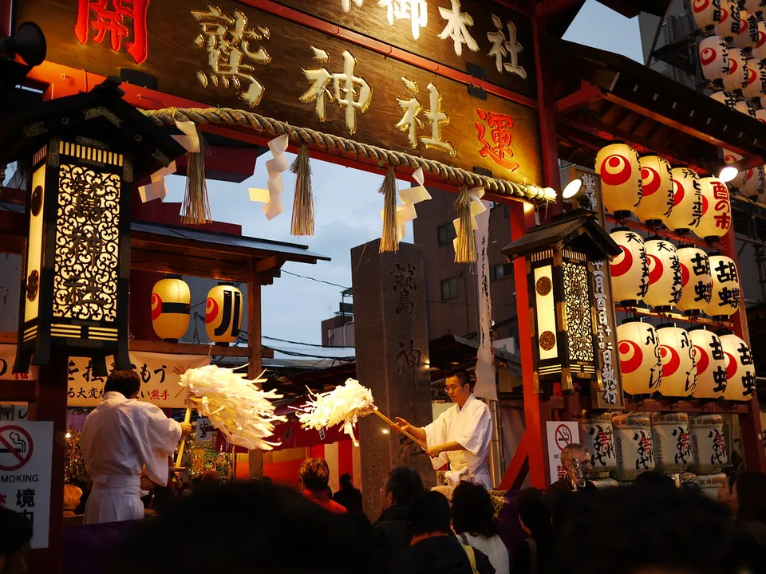
Asakusa's Otori Shrine publishes the current year's dates on its own site. For 2026 it lists 7 November (Saturday) as ichi-no-tori and 19 November (Thursday) as ni-no-tori. There is no third.
| Year | Rooster days in November | How many |
|---|---|---|
| 2023 | 11 and 23 November | Two |
| 2024 | 5, 17 and 29 November | Three |
| 2025 | 12 and 24 November | Two |
| 2026 | 7 (Sat) and 19 (Thu) November | Two |
The count matters to Japanese people for a superstitious reason. The market's official site states plainly that even now, years with a third rooster day are said to bring more fires. Explanations for the saying vary and none is authoritative; what is consistent is that it is still repeated. 2026 is a two-rooster year, so you will not hear it much this autumn.
One practical consequence of the 2026 calendar: the first market falls on a Saturday. Asakusa on the night of a weekend ichi-no-tori is the busiest version of this festival that exists. If you want to move around rather than shuffle, the Thursday is the softer of the two.
It is genuinely open for 24 hours
Most Japanese festivals have opening hours. This one does not. Otori Shrine states its hours for each market day as midnight to midnight — the rite begins with the ichiban-daiko (一番太鼓), the first drum, struck at 00:00, and the festival then runs the whole day through.
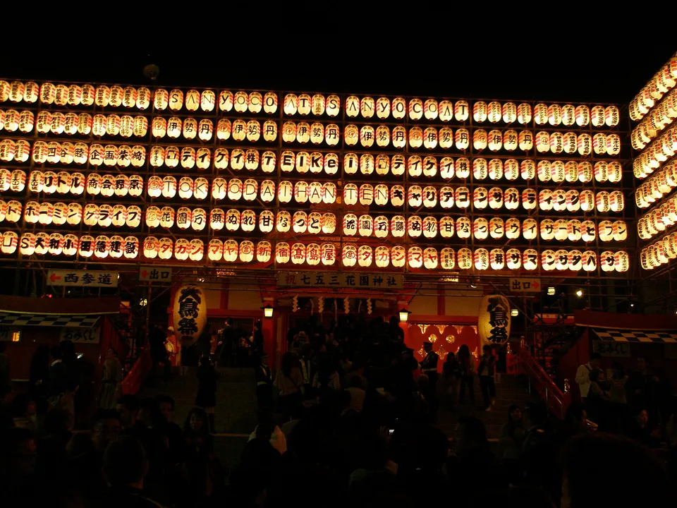
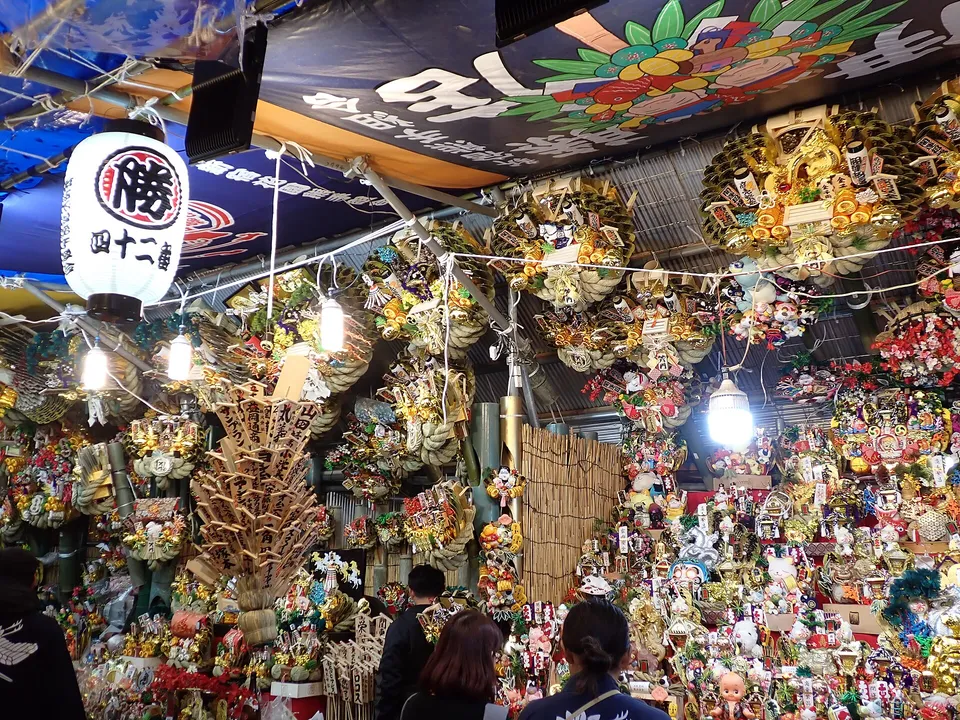
Photos: The market runs through the night — 掬茶, CC BY-SA 3.0, via Wikimedia Commons · Inside a kumade stall, Hanazono Shrine, November 2025 — Mozzucu, CC0, via Wikimedia Commons
That drum is also a starting pistol for shoppers. The shrine notes that the charity rakes prepared at each stall go on sale at the signal of the first drum, first-come first-served. This is why photographs of tori-no-ichi so often look like they were taken in the middle of the night: they were.
If you can only go once, go for the midnight opening rather than the evening. The queue forms before 00:00 on the night before the listed date — for 2026 that means the late evening of 6 November and of 18 November. Trains are the constraint, not the shrine: Tokyo's last services run around midnight and the first around 05:00, so plan to either leave before the trains stop or stay until they start.
What a kumade actually is
A kumade (熊手) is literally a bear's paw — a rake. The festival version is a bamboo rake loaded with lucky ornaments: gold coins (koban), rice bales, treasure ships, sea bream, and the round smiling face of Okame. The logic is agricultural and blunt: a rake gathers things in, so a decorated rake gathers in money and good fortune.
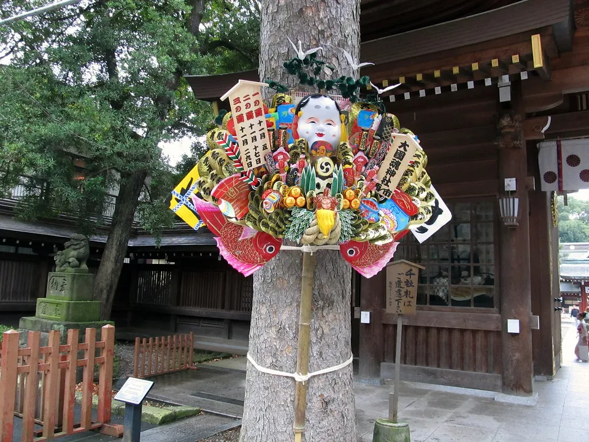
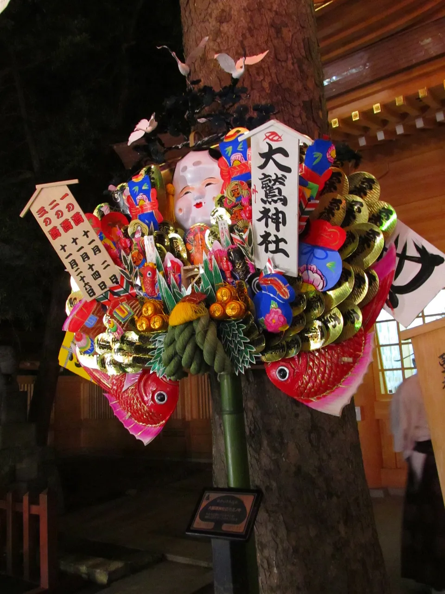
Photos: A decorated kumade — Fuchu, CC BY-SA 4.0, via Wikimedia Commons · A kumade sold at Ōtori Shrine — Jipanguguru, CC BY 3.0, via Wikimedia Commons
The market's official site gives three explanations for how a farm tool became a charm, and does not pick between them:
- The eagle's talons. An eagle seizes its prey and does not let go, so luck is "grabbed" the same way — and the shape of the talons became the rake amulet.
- The war fan. A commander's battle fan, dedicated at the shrine after a victory, warped into a curved rake-like shape, and became a charm for opening fortune.
- The farm tool. Tori-no-ichi began as a harvest festival in the village of Hanamata outside Edo, where practical rakes were sold. Edo taste turned the useful rake into a pun-laden lucky one.
The same source dates the Asakusa market's fame to around Meiwa 8 (1771), when the deity Washi Myōken Bosatsu was installed at Chōkoku-ji temple, and notes that elaborate hairpin-style rakes were the fashion of that period. The Asakusa Tourism Federation records that the market was already a famous annual event in the Hōreki and Meiwa years, 1750–60.
Two different objects get called "kumade" and it is worth keeping them apart. The big decorated rakes come from the merchants' stalls and have no price tags. The small kumade-mamori (熊手守り) is an amulet issued by the shrine itself at a set price, like any other omamori. If you want a souvenir rather than a business ritual, the amulet is the one to buy.
The buying ritual no official page documents
Every Japanese explainer describes the same sequence, and it is the part visitors most want to get right. Here it is — with a caveat that matters.
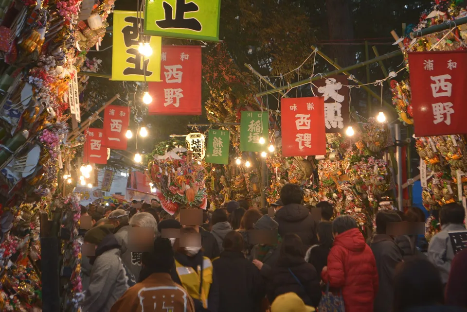
The rakes carry no prices. You point at one and ask. The seller names a figure, you negotiate downwards in steps of a few hundred yen, and when it lands the seller calls maketa ("I'm beaten") and the buyer answers katta ("bought") — the same pair of words that means "lost" and "won". Then comes the twist: you hand the discount back as a gratuity (ご祝儀, goshūgi), so you pay roughly the original asking price anyway. The haggling was never about money. The stall then performs a rhythmic hand-clap, the tejime, over your purchase, and the shop's staff carry the rake out for you. Regular buyers are said to size up by one each year, never down.
The haggle-then-tip-then-clap sequence is described consistently across Japanese media and retail sites, but it appears on none of the official pages checked for this guide: not Otori Shrine's, not Chōkoku-ji's, and not the market's own site. Treat it as something you will see rather than something required of you. If you simply pay the asking price for a small rake and say thank you, you have done nothing wrong, and no one will treat you as having done so. What you should not do is haggle over a mame-kumade (豆熊手, the palm-sized rake) or over the shrine's kumade-mamori — those are fixed-price items and bargaining over them reads as a misunderstanding.
Where to go: 33 markets in Tokyo
Asakusa is the largest, but the official market site links to 33 shrines and temples in Tokyo that hold their own tori-no-ichi. Nearly all list their date simply as "the rooster days of November", so the 2026 dates above apply. The listed exception is Nishiarai Daishi, which holds its market on 21 December instead.
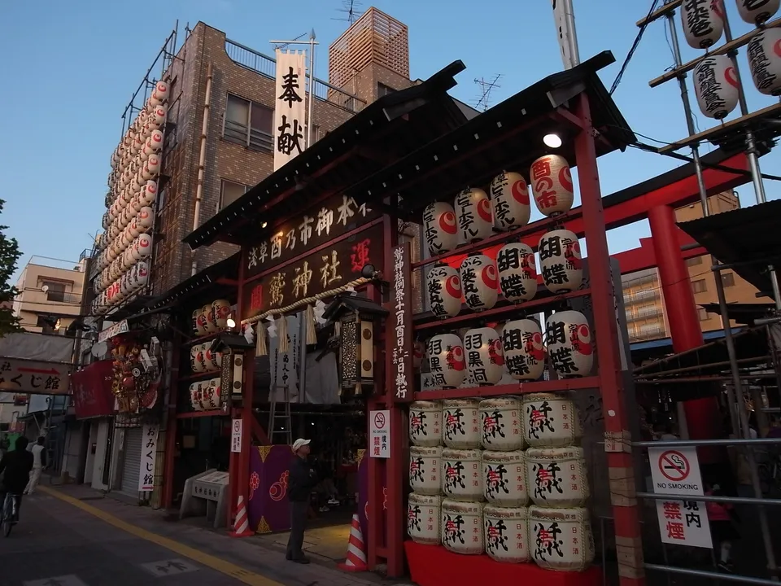
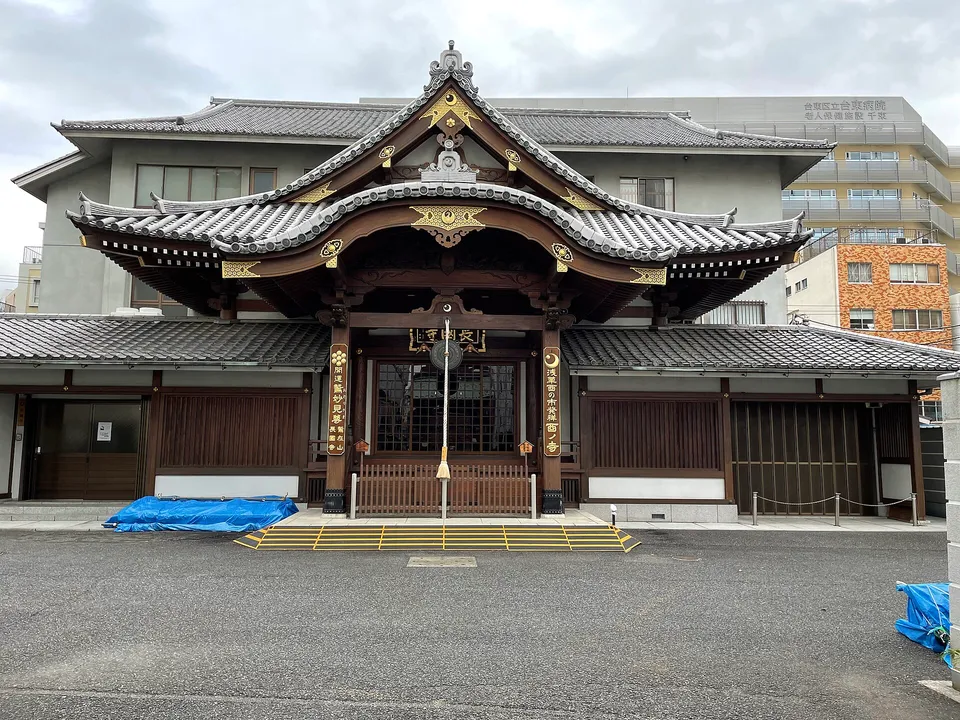
Photos: Ōtori Shrine, Asakusa, dressed for the market — Jerry fish tkc, CC BY-SA 3.0, via Wikimedia Commons · Chōkoku-ji, beside Ōtori Shrine — Higa4, CC0, via Wikimedia Commons
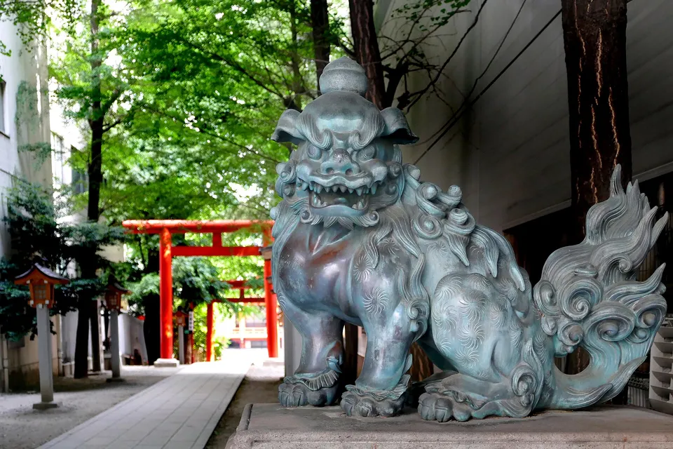
| Market | Why go there |
|---|---|
| Otori Shrine, Asakusa浅草 鷲神社 — Senzoku, Taitō | The origin site and the biggest. Midnight-to-midnight opening, the first drum, charity rakes sold from 00:00 first-come, and the nade-okame face below |
| Chōkoku-ji, Asakusa酉の寺 鷲山寺 長國寺 | The temple immediately beside the shrine, holding its market on the same days. Washi Myōken Bosatsu was installed here around 1771, which is what made Asakusa "the rooster town" |
| Hanazono Shrine, Shinjuku花園神社 | The Tokyo market for atmosphere rather than scale — it sits between Golden Gai and Kabukichō. The Shinjuku tourism association states that Hanazono holds a zen'yasai (eve festival) on the day before each rooster day, which in 2026 falls on the evenings of 6 and 18 November. The shrine had not published its own 2026 dates when this was checked |
| Ōtori Shrine, Meguro大鳥神社 | A neighbourhood-scale market in south-west Tokyo, far easier to walk through than Asakusa |
| Tomioka Hachimangū, Kōtō富岡八幡宮 | Also the finishing point of the Fukagawa Seven Lucky Gods route, if you are combining a November trip with New Year planning |
| Nishiarai Daishi, Adachi西新井大師 | The odd one out: its market is on 21 December, not on a November rooster day |
Also on the official list, among others: Ōtori Shrine in Hanahata (Adachi), Kitano Shrine, Nerima Ōtori Shrine, Kasai Shrine, and Musashino Hachimangū. Check the individual venue before travelling — the list gives dates as a rule, not as a per-year announcement.
There is no ticket and no gate. The market occupies the grounds of a working shrine or temple, and none of the official pages above lists an admission price. What you pay for is the rake.
Outside Tokyo, and why Kansai is different
Tori-no-ichi as a rake market is a Kantō institution, and the search results that promise one in Kyoto or Osaka do not survive a check against the shrines' own pages.
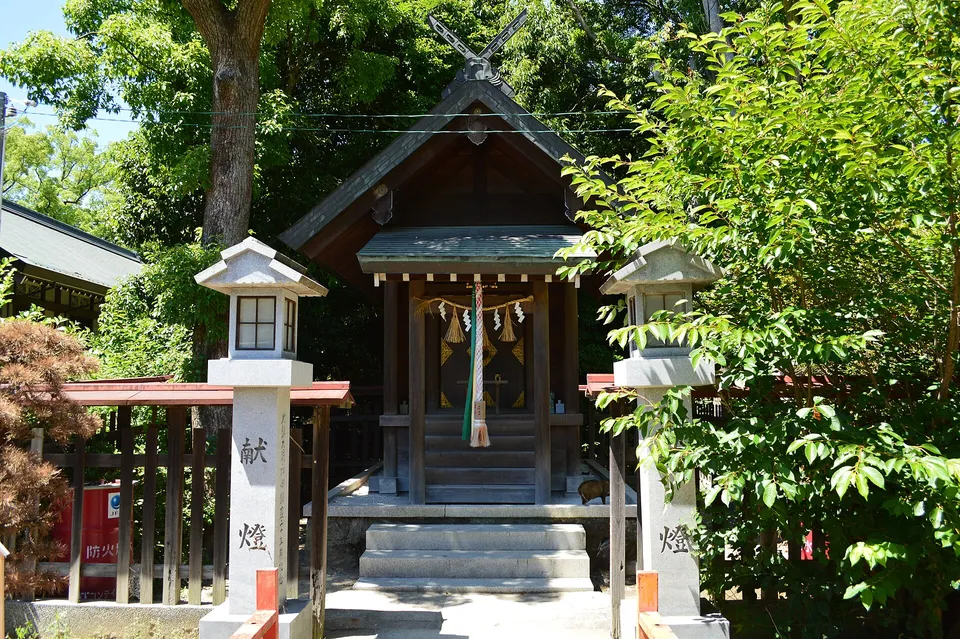
The head shrine of the Ōtori cult is not in Tokyo at all: it is Ōtori Taisha in Sakai, Osaka (大鳥大社, Ōtorikita-machi 1-1-2). Its published list of annual rites does include a November rooster-day observance, and the shrine calls it tori-no-hi-sai (酉の日祭) — a rite, not a market. That list mentions no kumade and no stalls. So you can attend the November rooster-day rite in Osaka; you cannot buy a rake at it.
For Kyoto, nothing could be confirmed. No Kyoto shrine or temple was found publishing a November rooster-day market on its own site, and the Asakusa market's directory of 33 venues covers Tokyo only. English pages advertising "tori-no-ichi in Kyoto" should be treated as unverified until the venue says so itself.
The pattern is worth remembering for any Japanese festival. Shrines that share a name are usually part of one cult, and the cult travels further than the festival does. Ōtori shrines exist all over Japan; the rake market grew up around a handful of them in Edo, and it stayed there.
The face you rub at Otori Shrine
At Asakusa's Otori Shrine there is a large mask-face called the nade-okame (なでおかめ), representing the goddess Ame-no-Uzume. You rub it, and the shrine publishes which part does what.
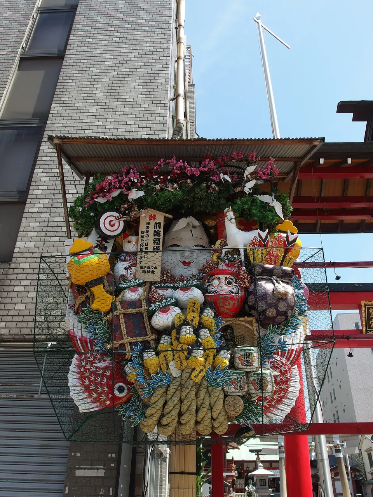
| Where you rub | What it is for |
|---|---|
| Forehead | Wisdom |
| Eyes | Foresight |
| Nose | Money luck |
| Right cheek | Success in love |
| Left cheek | Health |
| Mouth | Warding off misfortune |
| Chin, then clockwise | Things settling round and well |
The shrine's own commentary is unusually candid about wear patterns: the nose gets the most attention, because this is a shrine of commerce, while the right cheek has darkened noticeably from younger visitors after the love-luck. One scheduling note — the okame used to be moved to the office entrance during the market itself, but the shrine stopped doing that from 2015 on safety grounds. Outside market periods it stands in front of the main hall as before.
Tori-no-ichi sits at the front of Japan's luck-object season. It runs into the Seven Lucky Gods stamp routes → in the first days of January, and the daruma markets → on 6–7 January. If your collecting is paper rather than objects, start with goshuin, the shrine and temple seal-stamps →.
The Japanese you'll actually use
These are the words on the stall banners and on the shrine's notices — including the two shouted words that end a sale.
| Japanese | Reading | Meaning |
|---|---|---|
| 酉の市 | tori-no-ichi | the rooster-day market |
| 一の酉 / 二の酉 / 三の酉 | ichi-no-tori / ni-no-tori / san-no-tori | first, second and third rooster day of November |
| 熊手 | kumade | rake — literally "bear's paw" |
| 縁起熊手 | engi-kumade | the decorated lucky rake sold at the stalls |
| 熊手守り | kumade-mamori | the small rake amulet issued by the shrine |
| 豆熊手 | mame-kumade | palm-sized rake — fixed price, not haggled |
| 一番太鼓 | ichiban-daiko | the first drum, struck at midnight to open the festival |
| まけた / かった | maketa / katta | "beaten" / "bought" — the call and response that closes a sale |
| ご祝儀 | goshūgi | the gratuity you hand back after the discount |
| 手締め | tejime | the rhythmic hand-clap over a completed purchase |
| 商売繁昌 | shōbai hanjō | thriving business — what the rake is for |
| なでおかめ | nade-okame | the rubbing okame face |
Want these to stick? The free JLPT battle quiz drills travel and culture vocabulary like this with spaced repetition.
Common questions
Q. When is Tori-no-ichi in 2026?
A. There are two market days: Saturday 7 November and Thursday 19 November. Asakusa's Otori Shrine publishes these as ichi-no-tori and ni-no-tori. There is no third rooster day in November 2026.
Q. Why do the dates change every year?
A. The market is held on the rooster days of the old twelve-animal day cycle, which fall twelve days apart. Depending on where the cycle starts in November, the month contains either two or three of them, on different dates each year.
Q. What time does Tori-no-ichi open?
A. At Asakusa's Otori Shrine it runs midnight to midnight — a full 24 hours on each market day. The rite opens with the first drum at 00:00, and the charity rakes at each stall go on sale from that drum, first-come first-served.
Q. What is a kumade rake?
A. A bamboo rake decorated with lucky ornaments, bought to "rake in" fortune and business. The market's official site gives three origin stories — an eagle's grasping talons, a warlord's warped war fan, and the ordinary farm rakes sold at the harvest festival the market grew out of.
Q. Do I have to haggle for a kumade?
A. No. The haggle-then-tip-then-clap custom is described everywhere in Japanese media, but it appears on none of the official shrine, temple or market pages, and it is not required of you. Paying the asking price is fine. Palm-sized rakes and the shrine's own rake amulets are fixed-price and should not be bargained over at all.
Q. Is it true that a third rooster day means more fires?
A. It is a saying, and the market's official site notes it is still repeated. 2026 has only two rooster days, so it does not apply this year.
Q. Where else can I see Tori-no-ichi besides Asakusa?
A. The market's official site links to 33 shrines and temples across Tokyo, including Hanazono Shrine in Shinjuku, Ōtori Shrine in Meguro and Tomioka Hachimangū in Kōtō. Nearly all follow the November rooster days; Nishiarai Daishi is the exception, holding its market on 21 December.
Q. Do I need a ticket for Tori-no-ichi?
A. No. There is nothing to book and no gate. The market is held in the grounds of a working shrine or temple and none of the official pages lists an admission price. What you pay for is the rake.
Q. Is there a Tori-no-ichi in Kyoto or Osaka?
A. Not as a rake market. Ōtori Taisha in Sakai, Osaka — the head shrine of the Ōtori cult — lists a November rooster-day rite called tori-no-hi-sai among its annual events, but that list mentions no kumade and no stalls. For Kyoto, no shrine or temple was found publishing a November rooster-day market on its own site. The Asakusa market's directory of 33 venues covers Tokyo only.